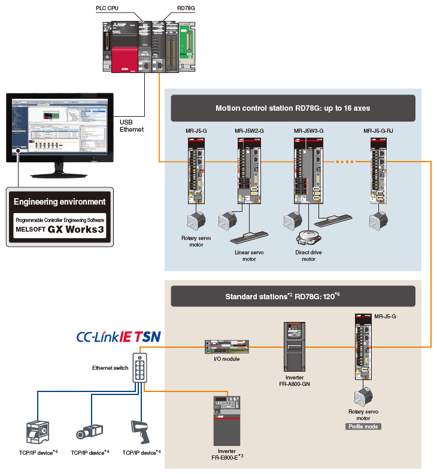

Motion module Konfigurasi Sistem (Mode Gerakan Sederhana)

Konfigurasi Sistem (Mode Gerakan Sederhana)
Modul Motion dapat berfungsi sebagai stasiun induk CC-Link IE TSN. *1
Fitur ini memungkinkan pengguna untuk membuat sistem secara lebih fleksibel dengan menghubungkan berbagai perangkat, seperti penguat servo, modul I/O jarak jauh, dan perangkat TCP/IP, ke modul Motion. *4

- *1.Stasiun sub-master tidak didukung.
- *2.Stasiun standar merujuk ke stasiun perangkat selain stasiun kontrol gerakan pada CC-Link IE TSN.
- *3.Perangkat TCP/IP tidak termasuk dalam stasiun standar.
- *4.Lihat manual untuk tindakan pencegahan saat perangkat CC-Link IE TSN Kelas B dan A dicampur.
- *5.RD78G dapat menghubungkan hingga 120 perangkat, yang merupakan jumlah total stasiun kontrol gerak dan stasiun standar.